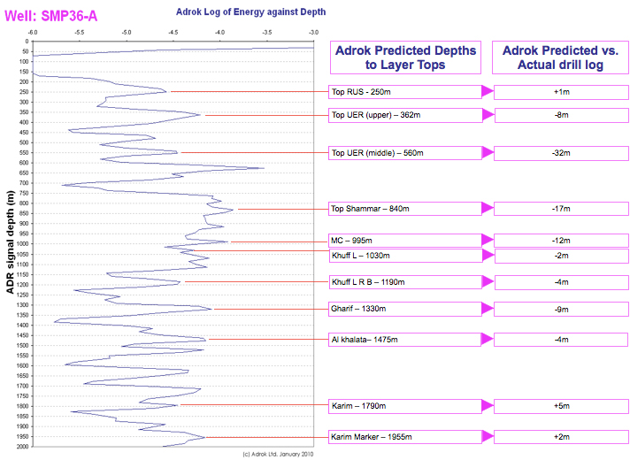

@@include('header.html', {
  "level": "third"
})

@@include('section-tabs.html', {
  "level": "third"
})

<div class='section main_content'>
  <div class="content">

    <section class="single-article">

      <ul class="breadcrumbs">
        <li><a href="../../table-of-contents.php">Contents</a><div class="breadcrumbs-arrow">&rsaquo;</div></li>
        <li><a href="petroleum-oman.php">10 Petroleum - Oman</a><div class="breadcrumbs-arrow">&rsaquo;</div></li>
        <li>10.2 Case Studies – Oman 1</li>
      </ul><!-- /.single-article__breadcrumb -->

      <div class="single-article__content">

        <h2>Onshore Oman
Oil field</h2>
        

        <h3>Adrok Harmonic Mean Energy between 1300m and 2050m  </h3>

        
        <span>Oil show between 1495m and 1550m</span>
        <span> Oil distinguished by mapping resonant frequencies stored in Adrok’s proprietary database</span>

      </div><!-- /.single-article__content -->
    </section><!-- /.single-article -->


    </div>
  </div>

@@include('footer.html')
